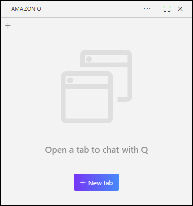
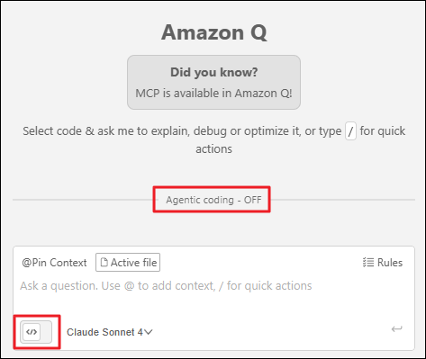
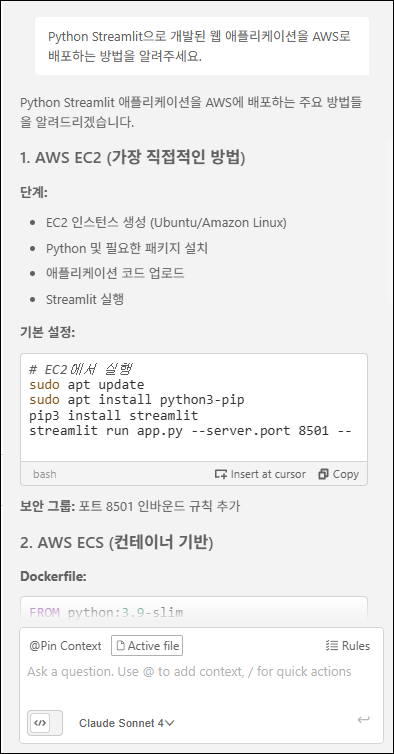
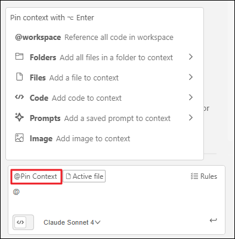
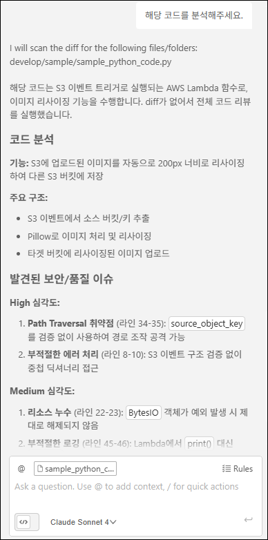

Task 1: Chat
Amazon Q Developer의 Chat 기능은 IDE 안에서 자연어로 질문하고 답변을 받아 개발 속도를 높여주는 대화형 AI 어시스턴트입니다. 코드 이해, 버그 원인 파악, 코드 생성, 리팩토링 제안, 문서화 등 일상적인 개발 작업을 빠르고 효율적으로 지원합니다.
이 실습에서는 Amazon Q Developer Chat의 핵심 기능을 체험하고, 효과적인 프롬프트 작성 방법과 컨텍스트 활용 전략을 학습합니다.
🎯 학습 목표
이 실습을 완료하면 다음을 수행할 수 있습니다:
- Amazon Q Developer Chat 인터페이스를 활성화하고 사용하기
- 효과적인 프롬프트를 작성하여 정확한 답변 얻기
@기호를 활용하여 파일, 폴더, 코드를 컨텍스트로 추가하기- 코드 분석 및 리뷰 요청으로 코드 품질 개선하기
Act 1: Amazon Q Chat 시작하기
1-1. 새 채팅 세션 열기
- VS Code 좌측 사이드바에서 Amazon Q 아이콘을 클릭합니다.
-
Q Developer 패널 상단의 "+ New tab" 버튼을 클릭하여 새 채팅 세션을 시작합니다.

1-2. Chat 모드 설정하기
-
Q Chat 패널 하단의 "Agentic" 토글을 비활성화합니다.

Chat vs Agent 모드
- Chat 모드: 질문-답변 형식의 대화형 상호작용을 제공합니다. 코드 설명, 기술 문서 조회, 간단한 코드 생성에 적합합니다.
- Agent 모드: 파일을 읽고 쓰며 복잡한 다중 단계 작업을 자율적으로 수행합니다. 다음 실습에서 자세히 다룹니다.
Act 2: Chat 모드 사용
2-1. 질문하기
-
아래 예시 프롬프트를 사용하거나, 자신만의 질문을 입력해보세요.
예시 프롬프트
AWS Bedrock AI를 활용하여 간단한 AI 서비스 애플리케이션을 개발하고자 합니다. 이를 구현하기 위한 구체적인 개발 절차와 권장 아키텍처 가이드라인을 제시해주세요. -
Amazon Q가 제공하는 답변 확인하기:
예시 응답

- 답변의 구조와 논리성을 평가하세요.
- 참고한 출처나 AWS 문서 링크가 포함되어 있는지 확인하세요.
- 추가 질문이 필요하다면 대화 기록을 유지하여 연속적으로 질문할 수 있습니다.
프롬프트 개선 전략
1. 퍼널링(Funneling): 넓은 질문에서 구체적인 질문으로
퍼널링은 처음에는 넓고 개방적인 질문으로 시작한 후, 점차 좁고 구체적인 질문으로 전환하는 기법입니다. 마치 깔때기(funnel)처럼 넓은 입구에서 좁은 출구로 흘러가듯, 대화를 구조화합니다.
퍼널링 실전 예시:
[1단계 - 넓은 질문] "Python으로 웹 애플리케이션을 만들고 싶어. 어떤 프레임워크를 추천해?" [2단계 - 범위 좁히기] "FastAPI를 선택했어. REST API를 구축할 때 필수적인 구성 요소는 뭐야?" [3단계 - 구체화] "FastAPI에서 JWT 인증을 구현하려고 해. 보안 모범 사례를 포함한 코드 예제를 보여줘." [4단계 - 세부 조정] "이 JWT 구현에서 토큰 만료 시간을 환경 변수로 관리하는 방법을 알려줘."이렇게 단계적으로 질문하면 Amazon Q가 맥락을 이해하고 더욱 정밀한 답변을 제공합니다.
2. 반복 개선: 첫 답변을 발판 삼아 개선하기
첫 답변이 만족스럽지 않다면 다음과 같이 요청을 명확히 하세요:
- "더 자세한 예시를 제공해줘"
- "코드 예제를 포함해줘"
- "초보자도 이해할 수 있게 설명해줘"
- "이 코드에 주석을 추가해서 다시 작성해줘"
3. 피드백 제공으로 답변 품질 향상
답변 하단의 👍/👎 버튼으로 피드백을 제공하면 향후 Amazon Q의 응답 품질이 개선됩니다.
Act 3: Context를 활용한 정밀한 코드 분석
3-1. Context란?
-
Context는 AI가 참고할 수 있는 추가 정보(파일, 폴더, 코드 조각, 프롬프트 템플릿 등)입니다.
-
Context를 제공하면:
- ✅ Amazon Q가 현재 프로젝트의 코드 구조와 패턴을 이해합니다.
- ✅ 프로젝트 특화된 정확한 답변과 코드 제안을 받을 수 있습니다.
- ✅ 여러 파일에 걸친 코드 관계를 파악하여 일관성 있는 코드를 생성합니다.
3-2. Context 메뉴 살펴보기
-
채팅 입력창에서 "@Pin Context" 버튼을 클릭하거나 "@" 를 입력하여 컨텍스트 메뉴를 엽니다.

-
사용 가능한 Context 유형:
Context 유형 설명 @workspace 전체 워크스페이스를 인덱싱하여 가장 관련성 높은 코드 조각을 자동으로 선택합니다. 대규모 프로젝트에서 특히 유용합니다. Folders 특정 폴더의 모든 파일을 컨텍스트로 추가합니다. 모듈별로 집중된 답변을 받을 때 사용합니다. Files 개별 파일을 컨텍스트로 추가합니다. 특정 파일에 대한 분석, 리팩토링, 버그 수정 시 유용합니다. Code 클래스, 함수, 글로벌 변수를 직접 선택하여 컨텍스트로 추가합니다. 함수 단위 분석 시 효과적입니다. Prompts 저장된 프롬프트 템플릿을 재사용합니다. 반복적인 작업 패턴을 효율화합니다. Image 스크린샷, 다이어그램, UI 모형을 추가하여 시각적 컨텍스트를 제공합니다. @Pin Context 기능
@Pin Context로 Context를 등록하면, 해당 채팅 세션에서 모든 질문에 자동으로 적용됩니다. 동일한 파일이나 폴더를 반복적으로 참조할 때 매우 유용합니다.
3-3. 실습: 코드 분석 및 리뷰 요청하기
- Context 추가하기:
@를 입력한 후 Files 메뉴에서sample/sample_python_code.py파일을 선택합니다.- 선택한 파일이 입력창 상단에 태그로 표시되는지 확인합니다.
-
코드 분석 및 리뷰 요청하기:
예시 프롬프트
이 Python 코드를 분석하고 발견된 문제점과 개선 방법을 구체적으로 설명해주세요. -
Amazon Q의 답변 확인하기:
예시 응답

Amazon Q는 다음과 같은 분석을 제공합니다:
- 🐛 버그 및 논리 오류: 잠재적인 런타임 에러, 엣지 케이스 누락
- 🔒 보안 취약점: SQL 인젝션, XSS, 하드코딩된 비밀번호
- ⚡ 성능 최적화: 비효율적인 알고리즘, 불필요한 루프
- 📐 코드 스멜: 중복 코드, 네이밍 컨벤션 위반, 복잡한 중첩 구조
- 💡 개선 제안: 리팩토링 방법, 모범 사례 적용
💡 추가 활용 팁
대화 히스토리 활용하기
-
Amazon Q는 대화 기록을 유지하므로, 이전 질문의 컨텍스트를 기억합니다. 이를 활용하여:
- "방금 제안한 코드를 TypeScript로 변환해줘"
- "이전 답변을 좀 더 간결하게 요약해줘"
- "같은 로직을 Flask가 아닌 FastAPI로 구현해줘"
와 같은 연속적인 질문이 가능합니다.
대화 초기화하기
- 대화가 주제에서 벗어났거나 새로운 주제로 전환하고 싶다면:
- 입력창에
/clear명령어를 입력하여 대화 기록을 초기화하거나, 새 채팅창을 활성화하세요.
- 입력창에
✅ 요약
이 워크숍 활동에서 다음 항목을 실습했습니다:
- ✅ Amazon Q Developer Chat 인터페이스 활성화 및 설정
- ✅ 효과적인 프롬프트 작성 원칙 학습 및 적용
- ✅ 퍼널링 기법을 활용한 점진적 질문 전략 이해
- ✅
@Context 메뉴를 활용한 파일 및 코드 참조 - ✅ 코드 분석 및 리뷰 요청으로 코드 품질 개선
- ✅ 대화 히스토리를 활용한 연속적인 질문 기법
🚀 다음 단계
다음 실습에서는 Amazon Q Developer의 Agent 모드를 활성화하여 다음과 같은 고급 기능을 체험합니다:
- 자율적인 파일 읽기/쓰기 및 파일 편집
- 변경 사항 되돌리기
- 문서 생성 요청
준비되셨다면 다음 실습으로 이동하세요! 🎉